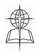

Southern Baptist Convention
Kerstmis met de Gettys
December is een bijzonder drukke tijd voor christelijke muziek artiesten Keith en Kristyn Getty. Het echtpaar, die bekend staat voor de moderne lofzang "In Christ Alone", hebben in het midden van hun achtste jaarlijkse kerstmarkt tour geweest. Maar Keith was snel om hectische schema van het paar bagatelliseren slechts een paar uur voor de tour opening concert. Lees verder...
Meet Southern Baptists
Al bijna 170 jaar, hebben Southern Baptists getracht het Evangelie van Jezus Christus overal verkondigen aan alle mensen. De Southern Baptist Convention werd gevormd met een Gospel visie. De stichtende charter identificeert zijn unieke focus: ... voor het doel van het uitlokken van een combinatie, en de leiding van de energieën van de Doper benaming van de christenen, voor de verspreiding van het Evangelie ... Lees meer ...
KERSTMIS: buitengewone geval van Gods gunst Mary's
Wat bedoelen we als we het hebben over de "gunst van God?" Het huis je altijd al wilde gaat in de afscherming en je het kopen voor een koopje. Uw kinderen brengen hun verslag kaarten huis en het is straight A's. Je komt erachter dat een lang verloren familielid linkerzijde kunt een mooi bedrag aan geld. Lees verder...
-
Bij een landelijke Kansas schuur, horen ze het kerstverhaal
Bij een schuur op het platteland van Kansas, pastor Steve Taylor leest het kerstverhaal elk jaar, zodat mensen kunnen "vertragen en ruik de geuren, de geluiden horen en te zien wat Christus ervaren de nacht Hij werd geboren." Rn
- WRAP-UP: Worldwide missies, ministeries naar verwachting winst in CP financiering te zien; 18 staten stimuleren van SBC deel
- SBTS slavernij en racisme rapport wekt media vlaag
- SBC's 'seizoen van verandering' is een kans om te bidden
- Intrekking van de belasting op de kerken lijkt te falen in het Congres
- 2018 brengt onvergetelijke mijlpalen voor LifeWay
- ERLC richt zich op de menselijke waardigheid, familie in 2018
- GuideStone, opnieuw in HQ, versterkt diensten in 2018
- Analist: Fed renteverhoging weerspiegelt 'economische omstandigheden'
- KERSTMIS: buitengewone geval van Gods gunst Mary's
- 'First Step' hervorming van de strafrechtspleging wordt wet
- KERSTMIS: De hoofdrol
Devotion van vandaag
Uit het boek Openbaring:
Vijfde en zesde trompet; engel en het boekje; de twee getuigen; de zevende trompet.
En Ik zal mijn twee getuigen geven. . . . En als zij hun getuigenis, het beest, dat uit de afgrond opkomt, hun de oorlog tegen hen, en het zal hen overwinnen en hen doden zullen geëindigd hebben (Openbaring 11: 3,7).
Wie zijn deze getuigen? Wat is hun boodschap? Wanneer zullen ze verschijnen? Velen hebben de antwoorden. Maar laten we niet zo bezorgd over de identiteit van deze getuigen in deze toekomstige gebeurtenis die we niet aan hun betekenis te herkennen aan ons te worden. - Lees verder ...